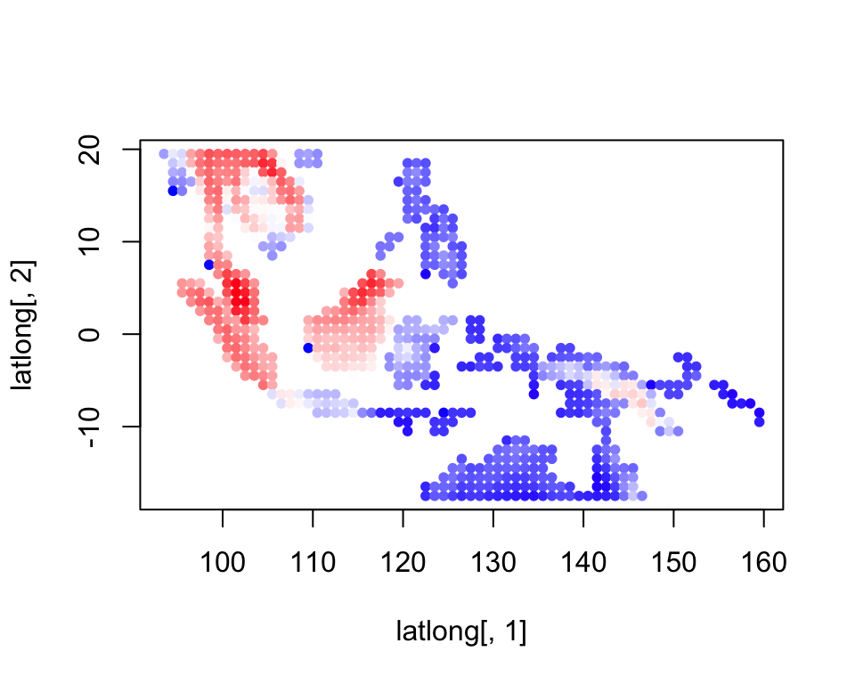
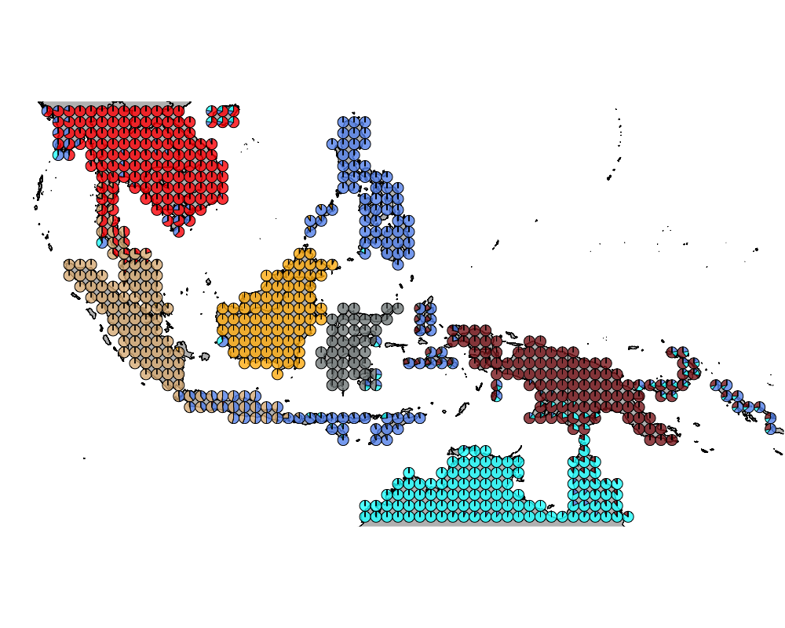
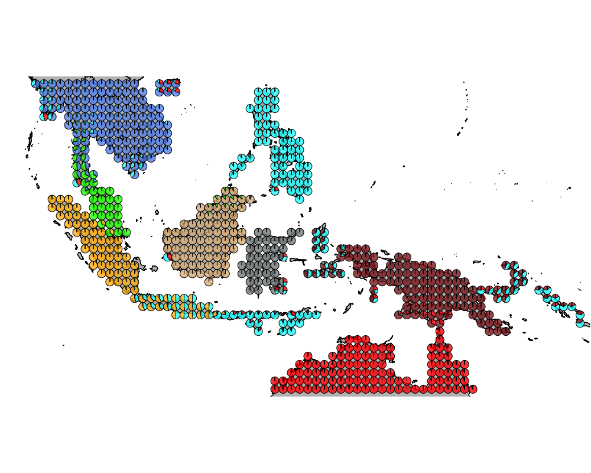

Wallacea region GoM analysis : mammals with bats
Kushal K Dey
6/5/2018
Intro
Here we observe the presence absence data of mammals species (including different species of bats) in the Australasian region (Wallacea). We try to interpret that in the context of our Grade of Membership (GoM) model and its applications to presence absence data.
Packages
library(methClust)
library(CountClust)
library(rasterVis)
library(gtools)
library(sp)
library(rgdal)
library(ggplot2)
library(maps)
library(mapdata)
library(mapplots)
library(scales)
library(ggthemes)Load the data
Wallacea Region data
mamms <- get(load("../data/mammals_with_bats.rda"))
latlong_chars <- rownames(mamms)
latlong <- cbind.data.frame(as.numeric(sapply(latlong_chars,
function(x) return(strsplit(x, "_")[[1]][1]))),
as.numeric(sapply(latlong_chars,
function(x) return(strsplit(x, "_")[[1]][2]))))Map of Wallacea
world_map <- map_data("world")
world_map <- world_map[world_map$region != "Antarctica",] # intercourse antarctica
world_map <- world_map[world_map$long > 90 & world_map$long < 160, ]
world_map <- world_map[world_map$lat > -18 & world_map$lat < 20, ]
p <- ggplot() + coord_fixed() +
xlab("") + ylab("")
#Add map to base plot
base_world_messy <- p + geom_polygon(data=world_map, aes(x=long, y=lat, group=group), colour="light green", fill="light green")
cleanup <-
theme(panel.grid.major = element_blank(), panel.grid.minor = element_blank(),
panel.background = element_rect(fill = 'white', colour = 'white'),
axis.line = element_line(colour = "white"), legend.position="none",
axis.ticks=element_blank(), axis.text.x=element_blank(),
axis.text.y=element_blank())
base_world <- base_world_messy + cleanup
base_world
mamms_data <- mammsrichness <- rowSums(mamms_data)colorGradient <- colorRampPalette(c("blue", "white", "red"))(200)
plot(latlong[,1], latlong[,2], col= colorGradient[richness], pch = 20, cex = 1)
Applying methclust presence absence Grade of Membership model to the presence absence data
topics_clust <- list()
topics_clust[[1]] <- NULL
for(k in 2:10){
topics_clust[[k]] <- meth_topics(mamms_data, 1 - mamms_data,
K=k, tol = 10, use_squarem = FALSE)
}
save(topics_clust, file = "../output/methClust_wallacea_mammals_bats.rda")Visualization
topics_clust <- get(load("../output/methClust_wallacea_mammals_bats.rda"))color = c("red", "cornflowerblue", "cyan", "brown4", "burlywood", "darkgoldenrod1",
"azure4", "green","deepskyblue","yellow", "azure1")
intensity <- 0.8
for(k in 2:10){
png(filename=paste0("../docs/Wallacea_mammals_bats/geostructure_birds_", k, ".png"),width = 1000, height = 800)
map("worldHires",
ylim=c(-18,20), xlim=c(90,160), # Re-defines the latitude and longitude range
col = "gray", fill=TRUE, mar=c(0.1,0.1,0.1,0.1))
lapply(1:dim(topics_clust[[k]]$omega)[1], function(r)
add.pie(z=as.integer(100*topics_clust[[k]]$omega[r,]),
x=latlong[r,1], y=latlong[r,2], labels=c("","",""),
radius = 0.5,
col=c(alpha(color[1],intensity),alpha(color[2],intensity),
alpha(color[3], intensity), alpha(color[4], intensity),
alpha(color[5], intensity), alpha(color[6], intensity),
alpha(color[7], intensity), alpha(color[8], intensity),
alpha(color[9], intensity), alpha(color[10], intensity),
alpha(color[11], intensity))));
dev.off()
}The geostructure plot for different K.
K = 2

K = 3

K = 4

K = 5

K = 6

K = 7

K = 8

K = 9

K = 10

Important mammals species
We obtain the driving bird species for each cluster using the CountClust package.
K = 2
driving_species_ind <- ExtractTopFeatures(topics_clust[[2]]$freq, method = "poisson", options = "min", top_features = 200)
species_names <- apply(driving_species_ind$indices, c(1,2), function(x) return (rownames(topics_clust[[2]]$freq)[x]))
t(species_names)## [,1] [,2]
## [1,] "Pseudomys.delicatulus" "Tragulus.kanchil"
## [2,] "Pteropus.scapulatus" "Arctogalidia.trivirgata"
## [3,] "Saccolaimus.flaviventris" "Leopoldamys.sabanus"
## [4,] "Mormopterus.lumsdenae" "Martes.flavigula"
## [5,] "Petaurus.breviceps" "Herpestes.brachyurus"
## [6,] "Macropus.robustus" "Paguma.larvata"
## [7,] "Hydromys.chrysogaster" "Rusa.unicolor"
## [8,] "Lagorchestes.conspicillatus" "Hipposideros.doriae"
## [9,] "Nyctophilus.bifax" "Hystrix.brachyura"
## [10,] "Mormopterus.beccarii" "Maxomys.surifer"
## [11,] "Pteropus.alecto" "Arctictis.binturong"
## [12,] "Myotis.macropus" "Trachypithecus.cristatus"
## [13,] "Tachyglossus.aculeatus" "Trichys.fasciculata"
## [14,] "Onychogalea.unguifera" "Galeopterus.variegatus"
## [15,] "Chalinolobus.nigrogriseus" "Hipposideros.galeritus"
## [16,] "Chaerephon.jobensis" "Manis.javanica"
## [17,] "Leggadina.lakedownensis" "Helarctos.malayanus"
## [18,] "Trichosurus.vulpecula" "Sus.barbatus"
## [19,] "Nyctophilus.geoffroyi" "Tupaia.tana"
## [20,] "Macroderma.gigas" "Nycteris.tragata"
## [21,] "Macropus.antilopinus" "Tragulus.napu"
## [22,] "Chalinolobus.gouldii" "Glischropus.tylopus"
## [23,] "Scotorepens.greyii" "Prionodon.linsang"
## [24,] "Nyctophilus.arnhemensis" "Rhizomys.sumatrensis"
## [25,] "Zyzomys.argurus" "Hylopetes.spadiceus"
## [26,] "Planigale.maculata" "Echinosorex.gymnura"
## [27,] "Taphozous.georgianus" "Hemigalus.derbyanus"
## [28,] "Pseudomys.nanus" "Rhinolophus.stheno"
## [29,] "Macropus.agilis" "Hipposideros.larvatus"
## [30,] "Mosia.nigrescens" "Mustela.nudipes"
## [31,] "Rhinonicteris.aurantia" "Nannosciurus.melanotis"
## [32,] "Rattus.tunneyi" "Petaurista.petaurista"
## [33,] "Vespadelus.caurinus" "Lutrogale.perspicillata"
## [34,] "Isoodon.macrourus" "Pardofelis.marmorata"
## [35,] "Hipposideros.stenotis" "Cynogale.bennettii"
## [36,] "Syconycteris.australis" "Rhinolophus.trifoliatus"
## [37,] "Rhinolophus.euryotis" "Ratufa.affinis"
## [38,] "Myotis.moluccarum" "Sundasciurus.lowii"
## [39,] "Pteropus.hypomelanus" "Maxomys.rajah"
## [40,] "Uromys.caudimaculatus" "Maxomys.whiteheadi"
## [41,] "Spilocuscus.maculatus" "Sundasciurus.hippurus"
## [42,] "Rattus.villosissimus" "Penthetor.lucasi"
## [43,] "Dactylopsila.trivirgata" "Callosciurus.prevostii"
## [44,] "Echymipera.rufescens" "Megaerops.ecaudatus"
## [45,] "Nyctimene.albiventer" "Petinomys.setosus"
## [46,] "Echymipera.kalubu" "Macroglossus.sobrinus"
## [47,] "Melomys.rufescens" "Tupaia.minor"
## [48,] "Pteropus.neohibernicus" "Sundasciurus.tenuis"
## [49,] "Scotorepens.sanborni" "Ratufa.bicolor"
## [50,] "Nyctophilus.walkeri" "Aonyx.cinereus"
## [51,] "Melomys.burtoni" "Hylomys.suillus"
## [52,] "Conilurus.penicillatus" "Niviventer.fulvescens"
## [53,] "Paranyctimene.tenax" "Rattus.argentiventer"
## [54,] "Paranyctimene.raptor" "Neofelis.diardi"
## [55,] "Pteropus.macrotis" "Iomys.horsfieldii"
## [56,] "Nyctimene.aello" "Petaurista.elegans"
## [57,] "Dobsonia.minor" "Petinomys.genibarbis"
## [58,] "Cynopterus.luzoniensis" "Cynopterus.horsfieldii"
## [59,] "Pipistrellus.adamsi" "Sus.scrofa"
## [60,] "Vespadelus.finlaysoni" "Murina.suilla"
## [61,] "Pipistrellus.westralis" "Rhinosciurus.laticaudatus"
## [62,] "Murexia.longicaudata" "Herpestes.semitorquatus"
## [63,] "Sminthopsis.virginiae" "Tarsius.bancanus"
## [64,] "Rattus.leucopus" "Muntiacus.muntjak"
## [65,] "Pseudomys.johnsoni" "Cynopterus.brachyotis"
## [66,] "Petrogale.brachyotis" "Kerivoula.pellucida"
## [67,] "Paramelomys.platyops" "Rhinolophus.sedulus"
## [68,] "Phalanger.gymnotis" "Callosciurus.notatus"
## [69,] "Lorentzimys.nouhuysi" "Lariscus.insignis"
## [70,] "Xenuromys.barbatus" "Rousettus.leschenaultii"
## [71,] "Dasyurus.albopunctatus" "Rhinolophus.shameli"
## [72,] "Cheiromeles.parvidens" "Hipposideros.dyacorum"
## [73,] "Pseudochirulus.canescens" "Coelops.frithii"
## [74,] "Macropus.rufus" "Maxomys.tajuddinii"
## [75,] "Distoechurus.pennatus" "Herpestes.javanicus"
## [76,] "Mesembriomys.gouldii" "Panthera.pardus"
## [77,] "Rattus.sordidus" "Rhinolophus.borneensis"
## [78,] "Kerivoula.muscina" "Panthera.tigris"
## [79,] "Ailurops.ursinus" "Prionailurus.planiceps"
## [80,] "Sus.celebensis" "Macaca.nemestrina"
## [81,] "Hipposideros.pelingensis" "Rhinolophus.malayanus"
## [82,] "Rousettus.celebensis" "Megaderma.lyra"
## [83,] "Maxomys.musschenbroekii" "Nycticebus.menagensis"
## [84,] "Rubrisciurus.rubriventer" "Niviventer.cremoriventer"
## [85,] "Scotophilus.celebensis" "Atherurus.macrourus"
## [86,] "Rattus.hoffmanni" "Viverricula.indica"
## [87,] "Styloctenium.wallacei" "Exilisciurus.exilis"
## [88,] "Maxomys.hellwaldii" "Crocidura.foetida"
## [89,] "Harpyionycteris.celebensis" "Hystrix.crassispinis"
## [90,] "Rhinolophus.tatar" "Muntiacus.atherodes"
## [91,] "Bunomys.chrysocomus" "Myotis.gomantongensis"
## [92,] "Paruromys.dominator" "Eonycteris.major"
## [93,] "Melomys.lutillus" "Rheithrosciurus.macrotis"
## [94,] "Prosciurillus.leucomus" "Chiropodomys.pusillus"
## [95,] "Thoopterus.nigrescens" "Myotis.hasseltii"
## [96,] "Acerodon.celebensis" "Rhinolophus.pusillus"
## [97,] "Dobsonia.exoleta" "Crocidura.fuliginosa"
## [98,] "Petropseudes.dahli" "Elephas.maximus"
## [99,] "Pseudantechinus.ningbing" "Prionailurus.bengalensis"
## [100,] "Sminthopsis.macroura" "Hipposideros.armiger"
## [101,] "Strigocuscus.celebensis" "Viverra.zibetha"
## [102,] "Nyctimene.cephalotes" "Rhizomys.pruinosus"
## [103,] "Pipistrellus.papuanus" "Viverra.megaspila"
## [104,] "Dasyurus.hallucatus" "Tupaia.gracilis"
## [105,] "Rousettus.bidens" "Menetes.berdmorei"
## [106,] "Dobsonia.crenulata" "Lepus.peguensis"
## [107,] "Rattus.praetor" "Rhinolophus.affinis"
## [108,] "Pogonomys.macrourus" "Myotis.ridleyi"
## [109,] "Pteropus.conspicillatus" "Kerivoula.intermedia"
## [110,] "Tarsius.tarsier" "Taphozous.longimanus"
## [111,] "Mormopterus.cobourgianus" "Nycticebus.bengalensis"
## [112,] "Babyrousa.celebensis" "Macaca.leonina"
## [113,] "Vespadelus.troughtoni" "Mops.mops"
## [114,] "Rhinolophus.megaphyllus" "Hipposideros.pomona"
## [115,] "Pipistrellus.angulatus" "Megaerops.niphanae"
## [116,] "Melomys.leucogaster" "Lutra.sumatrana"
## [117,] "Parahydromys.asper" "Rattus.tiomanicus"
## [118,] "Hipposideros.maggietaylorae" "Prionodon.pardicolor"
## [119,] "Pteropus.griseus" "Trachypithecus.germaini"
## [120,] "Anisomys.imitator" "Cheiromeles.torquatus"
## [121,] "Myoictis.melas" "Herpestes.urva"
## [122,] "Zaglossus.bartoni" "Arctonyx.collaris"
## [123,] "Pseudochirops.corinnae" "Tamiops.rodolphii"
## [124,] "Peroryctes.raffrayana" "Kerivoula.titania"
## [125,] "Murexia.melanurus" "Crocidura.monticola"
## [126,] "Mops.sarasinorum" "Bandicota.indica"
## [127,] "Phalanger.mimicus" "Rhinolophus.microglobosus"
## [128,] "Cercartetus.caudatus" "Hylobates.muelleri"
## [129,] "Pseudochirops.cupreus" "Dremomys.rufigenis"
## [130,] "Rhinolophus.virgo" "Nycticebus.coucang"
## [131,] "Planigale.ingrami" "Pipistrellus.coromandra"
## [132,] "Ptenochirus.jagori" "Ursus.thibetanus"
## [133,] "Haplonycteris.fischeri" "Lutra.lutra"
## [134,] "Pipistrellus.collinus" "Petaurista.philippensis"
## [135,] "Phalanger.orientalis" "Muntiacus.vaginalis"
## [136,] "Rattus.everetti" "Berylmys.berdmorei"
## [137,] "Pseudomys.desertor" "Bandicota.savilei"
## [138,] "Microperoryctes.longicauda" "Melogale.personata"
## [139,] "Nyctimene.robinsoni" "Nasalis.larvatus"
## [140,] "Aselliscus.tricuspidatus" "Tupaia.belangeri"
## [141,] "Phalanger.carmelitae" "Tupaia.dorsalis"
## [142,] "Dorcopsulus.vanheurni" "Crocidura.attenuata"
## [143,] "Nyctimene.certans" "Bos.gaurus"
## [144,] "Mallomys.rothschildi" "Mus.caroli"
## [145,] "Prosciurillus.murinus" "Rattus.tanezumi"
## [146,] "Crocidura.elongata" "Sundamys.muelleri"
## [147,] "Phalanger.sericeus" "Macaca.arctoides"
## [148,] "Austronomus.kuboriensis" "Hesperoptenus.tickelli"
## [149,] "Rhinolophus.subrufus" "Chiromyscus.chiropus"
## [150,] "Bubalus.depressicornis" "Callosciurus.erythraeus"
## [151,] "Acerodon.jubatus" "Rhinolophus.thomasi"
## [152,] "Macruromys.major" "Callosciurus.caniceps"
## [153,] "Bunomys.andrewsi" "Berylmys.bowersi"
## [154,] "Pseudantechinus.bilarni" "Balionycteris.maculata"
## [155,] "Wallabia.bicolor" "Tamiops.macclellandii"
## [156,] "Wyulda.squamicaudata" "Aeromys.thomasi"
## [157,] "Macropus.giganteus" "Crocidura.indochinensis"
## [158,] "Taeromys.celebensis" "Hylopetes.platyurus"
## [159,] "Paramelomys.mollis" "Pteromyscus.pulverulentus"
## [160,] "Taphozous.kapalgensis" "Hipposideros.lylei"
## [161,] "Murina.florium" "Presbytis.rubicunda"
## [162,] "Dactylonax.palpator" "Capricornis.milneedwardsii"
## [163,] "Crocidura.lea" "Cuon.alpinus"
## [164,] "Rattus.steini" "Callosciurus.finlaysonii"
## [165,] "Dorcopsis.luctuosa" "Catopuma.temminckii"
## [166,] "Lenomys.meyeri" "Euroscaptor.klossi"
## [167,] "Myotis.macrotarsus" "Niviventer.langbianis"
## [168,] "Uromys.anak" "Hesperoptenus.blanfordi"
## [169,] "Crossomys.moncktoni" "Tupaia.ferruginea"
## [170,] "Emballonura.raffrayana" "Hystrix.sumatrae"
## [171,] "Petaurus.norfolcensis" "Dyacopterus.brooksi"
## [172,] "Rusa.marianna" "Taphozous.theobaldi"
## [173,] "Paramelomys.rubex" "Ptilocercus.lowii"
## [174,] "Hipposideros.calcaratus" "Callosciurus.nigrovittatus"
## [175,] "Prosciurillus.weberi" "Rhinolophus.acuminatus"
## [176,] "Murexia.habbema" "Myotis.rosseti"
## [177,] "Mallomys.aroaensis" "Scotophilus.heathii"
## [178,] "Harpyionycteris.whiteheadi" "Catopuma.badia"
## [179,] "Paramelomys.moncktoni" "Nycticebus.pygmaeus"
## [180,] "Rattus.colletti" "Aeromys.tephromelas"
## [181,] "Hipposideros.obscurus" "Canis.aureus"
## [182,] "Mormopterus.planiceps" "Myotis.siligorensis"
## [183,] "Mormopterus.ridei" "Presbytis.frontata"
## [184,] "Acrobates.pygmaeus" "Cannomys.badius"
## [185,] "Phoniscus.papuensis" "Vandeleuria.oleracea"
## [186,] "Crocidura.rhoditis" "Mus.cookii"
## [187,] "Phascolosorex.dorsalis" "Rattus.losea"
## [188,] "Rattus.marmosurus" "Myotis.annectans"
## [189,] "Rattus.verecundus" "Symphalangus.syndactylus"
## [190,] "Bubalus.quarlesi" "Pipistrellus.cadornae"
## [191,] "Murexia.naso" "Lenothrix.canus"
## [192,] "Rhinolophus.inops" "Chiropodomys.gliroides"
## [193,] "Thylogale.browni" "Mus.pahari"
## [194,] "Pseudohydromys.ellermani" "Sundasciurus.brookei"
## [195,] "Pogonomys.sylvestris" "Rhinolophus.pearsonii"
## [196,] "Thylogale.brunii" "Niviventer.rapit"
## [197,] "Leptomys.elegans" "Kerivoula.kachinensis"
## [198,] "Pseudocheirus.peregrinus" "Rhinolophus.coelophyllus"
## [199,] "Mammelomys.lanosus" "Felis.chaus"
## [200,] "Paramelomys.naso" "Mustela.strigidorsa"K = 3
driving_species_ind <- ExtractTopFeatures(topics_clust[[3]]$freq, method = "poisson", options = "min", top_features = 200)
species_names <- apply(driving_species_ind$indices, c(1,2), function(x) return (rownames(topics_clust[[2]]$freq)[x]))
t(species_names)## [,1] [,2]
## [1,] "Macropus.agilis" "Trichys.fasciculata"
## [2,] "Mormopterus.beccarii" "Tupaia.tana"
## [3,] "Pteropus.alecto" "Trachypithecus.cristatus"
## [4,] "Pseudomys.delicatulus" "Hipposideros.doriae"
## [5,] "Lagorchestes.conspicillatus" "Herpestes.brachyurus"
## [6,] "Chaerephon.jobensis" "Penthetor.lucasi"
## [7,] "Petaurus.breviceps" "Tarsius.bancanus"
## [8,] "Pteropus.scapulatus" "Callosciurus.prevostii"
## [9,] "Saccolaimus.flaviventris" "Nannosciurus.melanotis"
## [10,] "Mormopterus.lumsdenae" "Neofelis.diardi"
## [11,] "Hydromys.chrysogaster" "Maxomys.rajah"
## [12,] "Chalinolobus.nigrogriseus" "Maxomys.whiteheadi"
## [13,] "Tachyglossus.aculeatus" "Sundasciurus.hippurus"
## [14,] "Myotis.macropus" "Nycticebus.menagensis"
## [15,] "Mosia.nigrescens" "Exilisciurus.exilis"
## [16,] "Macropus.robustus" "Crocidura.foetida"
## [17,] "Nyctophilus.bifax" "Hystrix.crassispinis"
## [18,] "Leggadina.lakedownensis" "Muntiacus.atherodes"
## [19,] "Trichosurus.vulpecula" "Myotis.gomantongensis"
## [20,] "Macropus.antilopinus" "Eonycteris.major"
## [21,] "Rhinolophus.euryotis" "Rheithrosciurus.macrotis"
## [22,] "Pteropus.hypomelanus" "Chiropodomys.pusillus"
## [23,] "Onychogalea.unguifera" "Sundasciurus.lowii"
## [24,] "Isoodon.macrourus" "Sundasciurus.tenuis"
## [25,] "Planigale.maculata" "Ratufa.affinis"
## [26,] "Nyctophilus.geoffroyi" "Tupaia.gracilis"
## [27,] "Macroderma.gigas" "Nasalis.larvatus"
## [28,] "Chalinolobus.gouldii" "Sus.barbatus"
## [29,] "Scotorepens.greyii" "Herpestes.semitorquatus"
## [30,] "Nyctophilus.arnhemensis" "Murina.suilla"
## [31,] "Zyzomys.argurus" "Megaerops.ecaudatus"
## [32,] "Pseudomys.nanus" "Tupaia.minor"
## [33,] "Taphozous.georgianus" "Hylobates.muelleri"
## [34,] "Myotis.moluccarum" "Callosciurus.notatus"
## [35,] "Syconycteris.australis" "Presbytis.rubicunda"
## [36,] "Melomys.burtoni" "Mustela.nudipes"
## [37,] "Rhinonicteris.aurantia" "Cheiromeles.torquatus"
## [38,] "Pteropus.conspicillatus" "Macaca.nemestrina"
## [39,] "Rattus.tunneyi" "Tupaia.dorsalis"
## [40,] "Vespadelus.caurinus" "Petinomys.genibarbis"
## [41,] "Scotorepens.sanborni" "Rhinolophus.sedulus"
## [42,] "Hipposideros.stenotis" "Muntiacus.muntjak"
## [43,] "Pipistrellus.adamsi" "Hipposideros.dyacorum"
## [44,] "Nyctimene.albiventer" "Lariscus.insignis"
## [45,] "Spilocuscus.maculatus" "Aeromys.thomasi"
## [46,] "Sminthopsis.virginiae" "Myotis.ridleyi"
## [47,] "Uromys.caudimaculatus" "Kerivoula.intermedia"
## [48,] "Pteropus.neohibernicus" "Echinosorex.gymnura"
## [49,] "Melomys.rufescens" "Hemigalus.derbyanus"
## [50,] "Dactylopsila.trivirgata" "Rattus.tiomanicus"
## [51,] "Rattus.villosissimus" "Rhinosciurus.laticaudatus"
## [52,] "Echymipera.rufescens" "Maxomys.tajuddinii"
## [53,] "Echymipera.kalubu" "Mops.mops"
## [54,] "Nyctophilus.walkeri" "Tupaia.splendidula"
## [55,] "Nyctimene.cephalotes" "Kerivoula.pellucida"
## [56,] "Conilurus.penicillatus" "Cynogale.bennettii"
## [57,] "Vespadelus.finlaysoni" "Catopuma.badia"
## [58,] "Mesembriomys.gouldii" "Sundamys.muelleri"
## [59,] "Pteropus.macrotis" "Prionailurus.planiceps"
## [60,] "Pseudomys.johnsoni" "Iomys.horsfieldii"
## [61,] "Paranyctimene.tenax" "Presbytis.frontata"
## [62,] "Paranyctimene.raptor" "Pongo.pygmaeus"
## [63,] "Nyctimene.aello" "Sundasciurus.brookei"
## [64,] "Dobsonia.minor" "Niviventer.rapit"
## [65,] "Cynopterus.luzoniensis" "Tupaia.ferruginea"
## [66,] "Pipistrellus.westralis" "Hystrix.sumatrae"
## [67,] "Rattus.praetor" "Dyacopterus.brooksi"
## [68,] "Petrogale.brachyotis" "Tupaia.montana"
## [69,] "Macropus.rufus" "Niviventer.cremoriventer"
## [70,] "Paramelomys.platyops" "Pteromyscus.pulverulentus"
## [71,] "Mormopterus.cobourgianus" "Balionycteris.maculata"
## [72,] "Sminthopsis.macroura" "Nycteris.tragata"
## [73,] "Pseudochirulus.canescens" "Presbytis.hosei"
## [74,] "Phalanger.gymnotis" "Ptilocercus.lowii"
## [75,] "Murina.florium" "Exilisciurus.whiteheadi"
## [76,] "Aselliscus.tricuspidatus" "Tupaia.picta"
## [77,] "Dendrolagus.inustus" "Maxomys.ochraceiventer"
## [78,] "Pipistrellus.papuanus" "Tragulus.napu"
## [79,] "Petropseudes.dahli" "Presbytis.melalophos"
## [80,] "Pseudantechinus.ningbing" "Chiropodomys.muroides"
## [81,] "Xenuromys.barbatus" "Pipistrellus.stenopterus"
## [82,] "Dobsonia.crenulata" "Hylopetes.platyurus"
## [83,] "Dasyurus.albopunctatus" "Chiropodomys.major"
## [84,] "Dasyurus.hallucatus" "Callosciurus.nigrovittatus"
## [85,] "Rhinolophus.megaphyllus" "Tupaia.longipes"
## [86,] "Pipistrellus.angulatus" "Hylobates.albibarbis"
## [87,] "Nyctophilus.microtis" "Sundamys.infraluteus"
## [88,] "Distoechurus.pennatus" "Crocidura.lepidura"
## [89,] "Hipposideros.calcaratus" "Lenothrix.canus"
## [90,] "Pseudantechinus.bilarni" "Diplogale.hosei"
## [91,] "Hipposideros.maggietaylorae" "Tupaia.salatana"
## [92,] "Pteropus.griseus" "Symphalangus.syndactylus"
## [93,] "Ailurops.ursinus" "Callosciurus.adamsi"
## [94,] "Sus.celebensis" "Muntiacus.montanus"
## [95,] "Hipposideros.pelingensis" "Niviventer.fraternus"
## [96,] "Rousettus.celebensis" "Presbytis.chrysomelas"
## [97,] "Acrobates.pygmaeus" "Hylobates.agilis"
## [98,] "Pseudomys.desertor" "Arctonyx.hoevenii"
## [99,] "Prosciurillus.leucomus" "Aeromys.tephromelas"
## [100,] "Thoopterus.nigrescens" "Aethalops.aequalis"
## [101,] "Acerodon.celebensis" "Crocidura.paradoxura"
## [102,] "Dobsonia.exoleta" "Rousettus.spinalatus"
## [103,] "Rattus.leucopus" "Crocidura.beccarii"
## [104,] "Rattus.sordidus" "Myotis.borneoensis"
## [105,] "Phalanger.orientalis" "Leopoldamys.ciliatus"
## [106,] "Spilocuscus.rufoniger" "Chironax.melanocephalus"
## [107,] "Strigocuscus.celebensis" "Mydaus.javanensis"
## [108,] "Pogonomys.macrourus" "Maxomys.inflatus"
## [109,] "Myoictis.melas" "Maxomys.baeodon"
## [110,] "Nyctimene.vizcaccia" "Hipposideros.ridleyi"
## [111,] "Maxomys.musschenbroekii" "Petaurillus.hosei"
## [112,] "Rubrisciurus.rubriventer" "Nycticebus.coucang"
## [113,] "Scotophilus.celebensis" "Dremomys.everetti"
## [114,] "Rattus.hoffmanni" "Dendrogale.melanura"
## [115,] "Styloctenium.wallacei" "Callosciurus.baluensis"
## [116,] "Maxomys.hellwaldii" "Crocidura.monticola"
## [117,] "Harpyionycteris.celebensis" "Crocidura.hutanis"
## [118,] "Rhinolophus.tatar" "Dyacopterus.spadiceus"
## [119,] "Bunomys.chrysocomus" "Tupaia.javanica"
## [120,] "Paruromys.dominator" "Lariscus.niobe"
## [121,] "Nyctimene.major" "Aethalops.alecto"
## [122,] "Murexia.longicaudata" "Lariscus.hosei"
## [123,] "Rousettus.bidens" "Callosciurus.orestes"
## [124,] "Emballonura.raffrayana" "Capricornis.sumatraensis"
## [125,] "Mops.sarasinorum" "Phoniscus.atrox"
## [126,] "Pteropus.admiralitatum" "Sundasciurus.jentinki"
## [127,] "Nyctimene.robinsoni" "Presbytis.thomasi"
## [128,] "Vespadelus.troughtoni" "Leopoldamys.diwangkarai"
## [129,] "Ptenochirus.jagori" "Coelops.robinsoni"
## [130,] "Haplonycteris.fischeri" "Hypsugo.kitcheneri"
## [131,] "Rattus.everetti" "Mustela.lutreolina"
## [132,] "Echymipera.clara" "Callosciurus.albescens"
## [133,] "Tarsius.tarsier" "Kerivoula.minuta"
## [134,] "Melomys.lutillus" "Rattus.annandalei"
## [135,] "Babyrousa.celebensis" "Petinomys.vordermanni"
## [136,] "Rhinolophus.virgo" "Hipposideros.bicolor"
## [137,] "Dorcopsis.hageni" "Rhinolophus.creaghi"
## [138,] "Prosciurillus.murinus" "Presbytis.siamensis"
## [139,] "Crocidura.elongata" "Glyphotes.simus"
## [140,] "Taphozous.kapalgensis" "Tragulus.javanicus"
## [141,] "Rhinolophus.subrufus" "Melogale.orientalis"
## [142,] "Phoniscus.papuensis" "Crocidura.brunnea"
## [143,] "Acerodon.jubatus" "Trachypithecus.auratus"
## [144,] "Planigale.ingrami" "Lepus.nigricollis"
## [145,] "Rattus.colletti" "Falsistrellus.mordax"
## [146,] "Pseudocheirus.peregrinus" "Mus.cervicolor"
## [147,] "Crocidura.lea" "Suncus.hosei"
## [148,] "Peroryctes.raffrayana" "Nesolagus.netscheri"
## [149,] "Lenomys.meyeri" "Pongo.abelii"
## [150,] "Macropus.giganteus" "Kerivoula.lenis"
## [151,] "Wallabia.bicolor" "Cynopterus.titthaecheilus"
## [152,] "Rusa.marianna" "Hypsugo.macrotis"
## [153,] "Thylogale.stigmatica" "Hypsugo.vordermanni"
## [154,] "Petrogale.concinna" "Murina.aenea"
## [155,] "Prosciurillus.weberi" "Arielulus.cuprosus"
## [156,] "Wyulda.squamicaudata" "Hylomys.parvus"
## [157,] "Phalanger.mimicus" "Pithecheir.parvus"
## [158,] "Bunomys.andrewsi" "Hesperoptenus.tomesi"
## [159,] "Bubalus.depressicornis" "Nycticebus.javanicus"
## [160,] "Hipposideros.obscurus" "Maxomys.alticola"
## [161,] "Harpyionycteris.whiteheadi" "Chaerephon.johorensis"
## [162,] "Phascogale.tapoatafa" "Hipposideros.madurae"
## [163,] "Paramelomys.rubex" "Petaurillus.emiliae"
## [164,] "Dorcopsis.muelleri" "Murina.rozendaali"
## [165,] "Petaurus.norfolcensis" "Rattus.blangorum"
## [166,] "Cercartetus.caudatus" "Dicerorhinus.sumatrensis"
## [167,] "Vespadelus.douglasorum" "Hystrix.javanica"
## [168,] "Crocidura.rhoditis" "Nycteris.javanica"
## [169,] "Rattus.marmosurus" "Crocidura.baluensis"
## [170,] "Murexia.melanurus" "Suncus.malayanus"
## [171,] "Dobsonia.moluccensis" "Crocidura.malayana"
## [172,] "Rhinolophus.inops" "Hipposideros.coxi"
## [173,] "Mormopterus.planiceps" "Chimarrogale.phaeura"
## [174,] "Mormopterus.ridei" "Haeromys.margarettae"
## [175,] "Taeromys.celebensis" "Mus.crociduroides"
## [176,] "Dobsonia.praedatrix" "Rusa.timorensis"
## [177,] "Pteropus.capistratus" "Hylobates.moloch"
## [178,] "Melonycteris.melanops" "Presbytis.comata"
## [179,] "Dobsonia.anderseni" "Myotis.federatus"
## [180,] "Melomys.leucogaster" "Tupaia.glis"
## [181,] "Kerivoula.muscina" "Sus.verrucosus"
## [182,] "Paramelomys.mollis" "Chimarrogale.hantu"
## [183,] "Austronomus.australis" "Cynopterus.horsfieldii"
## [184,] "Saccolaimus.mixtus" "Pongo.tapanuliensis"
## [185,] "Eonycteris.robusta" "Otomops.formosus"
## [186,] "Sus.philippensis" "Rattus.hoogerwerfi"
## [187,] "Taphozous.australis" "Prionodon.linsang"
## [188,] "Bubalus.quarlesi" "Hesperoptenus.doriae"
## [189,] "Nyctimene.certans" "Mormopterus.doriae"
## [190,] "Crocidura.nigripes" "Rattus.baluensis"
## [191,] "Thylogale.brunii" "Suncus.ater"
## [192,] "Dorcopsis.luctuosa" "Rhinolophus.proconsulis"
## [193,] "Zaglossus.bruijnii" "Pithecheirops.otion"
## [194,] "Lorentzimys.nouhuysi" "Crocidura.vosmaeri"
## [195,] "Exilisciurus.concinnus" "Megaerops.wetmorei"
## [196,] "Cynocephalus.volans" "Murina.huttoni"
## [197,] "Tarsius.syrichta" "Cynopterus.minutus"
## [198,] "Sundasciurus.philippinensis" "Emballonura.monticola"
## [199,] "Macaca.tonkeana" "Maxomys.inas"
## [200,] "Crocidura.grayi" "Arielulus.societatis"
## [,3]
## [1,] "Melogale.personata"
## [2,] "Petaurista.philippensis"
## [3,] "Megaerops.niphanae"
## [4,] "Pipistrellus.coromandra"
## [5,] "Bandicota.indica"
## [6,] "Rhinolophus.microglobosus"
## [7,] "Bandicota.savilei"
## [8,] "Rattus.tanezumi"
## [9,] "Lepus.peguensis"
## [10,] "Hesperoptenus.tickelli"
## [11,] "Tupaia.belangeri"
## [12,] "Scotophilus.heathii"
## [13,] "Berylmys.berdmorei"
## [14,] "Ursus.thibetanus"
## [15,] "Muntiacus.vaginalis"
## [16,] "Macaca.leonina"
## [17,] "Rhinolophus.malayanus"
## [18,] "Callosciurus.finlaysonii"
## [19,] "Canis.aureus"
## [20,] "Rhinolophus.shameli"
## [21,] "Tamiops.rodolphii"
## [22,] "Cannomys.badius"
## [23,] "Vandeleuria.oleracea"
## [24,] "Rhinolophus.thomasi"
## [25,] "Felis.chaus"
## [26,] "Viverra.megaspila"
## [27,] "Menetes.berdmorei"
## [28,] "Crocidura.vorax"
## [29,] "Rattus.losea"
## [30,] "Kerivoula.titania"
## [31,] "Nycticebus.bengalensis"
## [32,] "Myotis.rosseti"
## [33,] "Prionodon.pardicolor"
## [34,] "Arctonyx.collaris"
## [35,] "Trachypithecus.phayrei"
## [36,] "Rhinolophus.pearsonii"
## [37,] "Trachypithecus.germaini"
## [38,] "Hipposideros.pomona"
## [39,] "Niviventer.langbianis"
## [40,] "Mus.pahari"
## [41,] "Kerivoula.kachinensis"
## [42,] "Hylopetes.phayrei"
## [43,] "Crocidura.fuliginosa"
## [44,] "Capricornis.milneedwardsii"
## [45,] "Murina.tubinaris"
## [46,] "Callosciurus.erythraeus"
## [47,] "Pipistrellus.pulveratus"
## [48,] "Atherurus.macrourus"
## [49,] "Nycticebus.pygmaeus"
## [50,] "Mustela.strigidorsa"
## [51,] "Macaca.assamensis"
## [52,] "Pipistrellus.cadornae"
## [53,] "Mustela.kathiah"
## [54,] "Crocidura.indochinensis"
## [55,] "Chiromyscus.chiropus"
## [56,] "Herpestes.urva"
## [57,] "Hylopetes.alboniger"
## [58,] "Rhinolophus.paradoxolophus"
## [59,] "Rhizomys.pruinosus"
## [60,] "Macaca.mulatta"
## [61,] "Rattus.nitidus"
## [62,] "Scotomanes.ornatus"
## [63,] "Aselliscus.stoliczkanus"
## [64,] "Macaca.arctoides"
## [65,] "Ia.io"
## [66,] "Callosciurus.caniceps"
## [67,] "Mus.cookii"
## [68,] "Dendrogale.murina"
## [69,] "Myotis.annectans"
## [70,] "Pipistrellus.paterculus"
## [71,] "Mus.shortridgei"
## [72,] "Rattus.andamanensis"
## [73,] "Melogale.moschata"
## [74,] "Tamiops.maritimus"
## [75,] "Myotis.chinensis"
## [76,] "Niviventer.tenaster"
## [77,] "Pteropus.lylei"
## [78,] "Bos.gaurus"
## [79,] "Muntiacus.rooseveltorum"
## [80,] "Muntiacus.truongsonensis"
## [81,] "Leopoldamys.edwardsi"
## [82,] "Nomascus.gabriellae"
## [83,] "Murina.aurata"
## [84,] "Chrotogale.owstoni"
## [85,] "Muntiacus.vuquangensis"
## [86,] "Dremomys.rufigenis"
## [87,] "Hylobates.pileatus"
## [88,] "Megaderma.lyra"
## [89,] "Hipposideros.armiger"
## [90,] "Viverra.zibetha"
## [91,] "Crocidura.attenuata"
## [92,] "Leopoldamys.neilli"
## [93,] "Rhinolophus.marshalli"
## [94,] "Callosciurus.inornatus"
## [95,] "Rhinolophus.siamensis"
## [96,] "Pygathrix.nemaeus"
## [97,] "Manis.pentadactyla"
## [98,] "Euroscaptor.klossi"
## [99,] "Tamiops.macclellandii"
## [100,] "Sphaerias.blanfordi"
## [101,] "Bandicota.bengalensis"
## [102,] "Pygathrix.nigripes"
## [103,] "Rhinolophus.coelophyllus"
## [104,] "Tadarida.latouchei"
## [105,] "Chimarrogale.himalayica"
## [106,] "Belomys.pearsonii"
## [107,] "Rhinolophus.yunanensis"
## [108,] "Herpestes.auropunctatus"
## [109,] "Rucervus.eldii"
## [110,] "Maxomys.moi"
## [111,] "Naemorhedus.griseus"
## [112,] "Nesolagus.timminsi"
## [113,] "Pteropus.intermedius"
## [114,] "Pipistrellus.abramus"
## [115,] "Bos.sauveli"
## [116,] "Crocidura.tanakae"
## [117,] "Eptesicus.serotinus"
## [118,] "Pteropus.giganteus"
## [119,] "Nomascus.leucogenys"
## [120,] "Nomascus.siki"
## [121,] "Falsistrellus.affinis"
## [122,] "Hipposideros.rotalis"
## [123,] "Trachypithecus.hatinhensis"
## [124,] "Anourosorex.squamipes"
## [125,] "Hapalomys.delacouri"
## [126,] "Hipposideros.scutinares"
## [127,] "Axis.porcinus"
## [128,] "Muntiacus.feae"
## [129,] "Pseudoryx.nghetinhensis"
## [130,] "Hipposideros.halophyllus"
## [131,] "Mustela.sibirica"
## [132,] "Pygathrix.cinerea"
## [133,] "Myotis.pilosus"
## [134,] "Micromys.minutus"
## [135,] "Callosciurus.phayrei"
## [136,] "Hoolock.leuconedys"
## [137,] "Crocidura.phanluongi"
## [138,] "Hipposideros.khaokhouayensis"
## [139,] "Trachypithecus.barbei"
## [140,] "Prionailurus.viverrinus"
## [141,] "Callosciurus.pygerythrus"
## [142,] "Myotis.altarium"
## [143,] "Hylomys.megalotis"
## [144,] "Laonastes.aenigmamus"
## [145,] "Neofelis.nebulosa"
## [146,] "Crocidura.hilliana"
## [147,] "Eudiscopus.denticulus"
## [148,] "Eptesicus.pachyotis"
## [149,] "Euroscaptor.parvidens"
## [150,] "Hipposideros.grandis"
## [151,] "Crocidura.zaitsevi"
## [152,] "Berylmys.mackenziei"
## [153,] "Murina.harrisoni"
## [154,] "Bubalus.arnee"
## [155,] "Craseonycteris.thonglongyai"
## [156,] "Hapalomys.longicaudatus"
## [157,] "Trachypithecus.laotum"
## [158,] "Saxatilomys.paulinae"
## [159,] "Biswamoyopterus.laoensis"
## [160,] "Mus.fragilicauda"
## [161,] "Rhinolophus.convexus"
## [162,] "Rhinolophus.sinicus"
## [163,] "Hoolock.hoolock"
## [164,] "Niviventer.confucianus"
## [165,] "Leopoldamys.milleti"
## [166,] "Rattus.osgoodi"
## [167,] "Tragulus.versicolor"
## [168,] "Euroscaptor.subanura"
## [169,] "Mus.booduga"
## [170,] "Hipposideros.lylei"
## [171,] "Dremomys.pyrrhomerus"
## [172,] "Mogera.insularis"
## [173,] "Crocidura.rapax"
## [174,] "Rhinolophus.rouxii"
## [175,] "Tragulus.williamsoni"
## [176,] "Myotis.annamiticus"
## [177,] "Cervus.nippon"
## [178,] "Arielulus.aureocollaris"
## [179,] "Niviventer.hinpoon"
## [180,] "Hipposideros.pratti"
## [181,] "Myotis.siligorensis"
## [182,] "Taphozous.theobaldi"
## [183,] "Chodsigoa.parca"
## [184,] "Crocidura.sokolovi"
## [185,] "Otomops.wroughtoni"
## [186,] "Capricornis.thar"
## [187,] "Mus.caroli"
## [188,] "Sus.bucculentus"
## [189,] "Panthera.pardus"
## [190,] "Crocidura.wuchihensis"
## [191,] "Rhinolophus.pusillus"
## [192,] "Murina.cyclotis"
## [193,] "Viverricula.indica"
## [194,] "Herpestes.javanicus"
## [195,] "Nomascus.hainanus"
## [196,] "Neohylomys.hainanensis"
## [197,] "Lepus.hainanus"
## [198,] "Berylmys.bowersi"
## [199,] "Hipposideros.turpis"
## [200,] "Rousettus.leschenaultii"sessionInfo()## R version 3.5.0 (2018-04-23)
## Platform: x86_64-apple-darwin15.6.0 (64-bit)
## Running under: macOS Sierra 10.12.6
##
## Matrix products: default
## BLAS: /Library/Frameworks/R.framework/Versions/3.5/Resources/lib/libRblas.0.dylib
## LAPACK: /Library/Frameworks/R.framework/Versions/3.5/Resources/lib/libRlapack.dylib
##
## locale:
## [1] en_US.UTF-8/en_US.UTF-8/en_US.UTF-8/C/en_US.UTF-8/en_US.UTF-8
##
## attached base packages:
## [1] stats graphics grDevices utils datasets methods base
##
## other attached packages:
## [1] ggthemes_3.5.0 scales_0.5.0 mapplots_1.5
## [4] mapdata_2.3.0 maps_3.3.0 rgdal_1.2-20
## [7] gtools_3.5.0 rasterVis_0.44 latticeExtra_0.6-28
## [10] RColorBrewer_1.1-2 lattice_0.20-35 raster_2.6-7
## [13] sp_1.2-7 CountClust_1.6.1 ggplot2_2.2.1
## [16] methClust_0.1.0
##
## loaded via a namespace (and not attached):
## [1] zoo_1.8-1 modeltools_0.2-21 slam_0.1-43
## [4] reshape2_1.4.3 colorspace_1.3-2 htmltools_0.3.6
## [7] stats4_3.5.0 viridisLite_0.3.0 yaml_2.1.19
## [10] mgcv_1.8-23 rlang_0.2.0 hexbin_1.27.2
## [13] pillar_1.2.2 plyr_1.8.4 stringr_1.3.1
## [16] munsell_0.4.3 gtable_0.2.0 evaluate_0.10.1
## [19] labeling_0.3 knitr_1.20 permute_0.9-4
## [22] flexmix_2.3-14 parallel_3.5.0 Rcpp_0.12.17
## [25] backports_1.1.2 limma_3.36.1 vegan_2.5-1
## [28] maptpx_1.9-5 picante_1.7 digest_0.6.15
## [31] stringi_1.2.2 cowplot_0.9.2 grid_3.5.0
## [34] rprojroot_1.3-2 tools_3.5.0 magrittr_1.5
## [37] lazyeval_0.2.1 tibble_1.4.2 cluster_2.0.7-1
## [40] ape_5.1 MASS_7.3-49 Matrix_1.2-14
## [43] SQUAREM_2017.10-1 assertthat_0.2.0 rmarkdown_1.9
## [46] boot_1.3-20 nnet_7.3-12 nlme_3.1-137
## [49] compiler_3.5.0This R Markdown site was created with workflowr